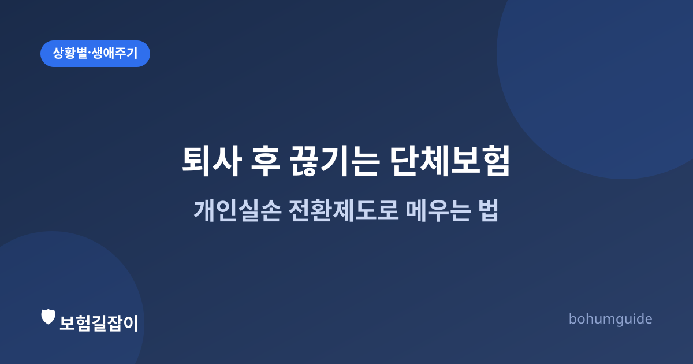

퇴사 후 회사 단체보험 공백, 개인실손 전환제도로 메우는 법
퇴사할 때 챙기는 서류 목록에 '보험'은 잘 끼지 않습니다. 하지만 재직 중 회사가 들어 준 단체실손보험은 퇴사와 동시에 끝나는 경우가 많습니다. 공백 없이 이어가는 방법을 정리했습니다.

✍️ 편집자 참고: 본 글은 초안입니다. 전환 신청 가능 기한과 심사 완화 범위는 보험사·상품마다 다르므로 게시 전 최신 기준으로 검수·수정해 주세요.
많은 회사가 임직원 복지 차원에서 단체실손보험(단체보험)에 가입시켜 줍니다. 별도로 개인 실손보험을 챙기지 않은 채 회사 보장만 믿고 지내는 경우도 많은데, 문제는 이 단체보험이 재직 중에만 유효하다는 점입니다. 퇴사하는 순간 보장이 끊긴다는 사실을 모르고 있다가, 이직 사이 공백기나 창업·프리랜서 전환 시기에 사고나 진단을 겪고 나서야 알게 되는 경우가 적지 않습니다.
단체보험은 왜 퇴사와 함께 끝날까
단체보험은 회사(계약자)가 소속 임직원(피보험자)을 위해 하나의 계약으로 가입하는 구조입니다. 보험료도 회사가 전액 또는 일부를 부담하는 경우가 많습니다. 이 계약의 피보험자 자격은 통상 '재직 중인 임직원'으로 한정되기 때문에, 퇴사로 그 자격을 잃으면 해당 보험의 보장 대상에서도 자동으로 빠지게 됩니다. 개인이 별도로 해지 신청을 하지 않아도, 퇴사 시점부터 보장이 끊기는 셈입니다.
문제는 이 공백이 스스로 인지하기 어렵다는 점입니다. 재직 중에는 병원비를 청구할 때마다 실손보험 혜택을 자연스럽게 받아 왔기 때문에, 퇴사 후에도 같은 보장이 이어질 것이라고 착각하기 쉽습니다.
개인실손 전환제도란
이런 공백을 메우기 위해 마련된 것이 개인실손 전환제도입니다. 단체실손보험에 가입되어 있던 사람이 퇴직 등으로 자격을 상실했을 때, 별도의 건강 고지나 심사 없이(또는 심사를 완화한 조건으로) 개인 실손보험으로 전환해 가입할 수 있도록 한 제도입니다. 평소라면 개인실손에 새로 가입할 때 건강상태를 고지하고 심사를 받아야 하지만, 이 제도를 이용하면 그 부담 없이 보장을 이어갈 수 있다는 것이 핵심 장점입니다.
| 구분 | 건강 고지·심사 | 신청 가능 기한 | 보장 내용 |
|---|---|---|---|
| 개인실손 전환제도 | 완화되거나 생략되는 경우가 많음 | 퇴직(자격상실) 후 일정 기간 내로 제한 | 기존과 유사한 보장으로 설계되나 상품 구조상 차이 가능 |
| 일반 개인실손 신규 가입 | 정식 건강 고지·심사 | 제한 없음(다만 거절 가능) | 가입 시점 표준화 실손 상품 기준 |
표는 이해를 돕기 위한 일반적 비교이며, 실제 전환 조건과 보장 범위는 그동안 가입되어 있던 단체보험의 보험사·상품에 따라 달라집니다.
신청 기한을 놓치면 안 되는 이유
전환 신청은 '기간 내'가 핵심
개인실손 전환제도의 가장 중요한 조건은 퇴직(자격 상실) 후 정해진 기간 안에 신청해야 한다는 것입니다. 이 기간은 상품과 보험사 안내에 따라 다르므로 정확한 기한은 반드시 확인해야 하지만, 통상 짧게는 1개월 내외로 안내되는 경우가 많아 여유가 크지 않습니다. 기한을 넘기면 전환제도의 혜택(심사 완화)을 받을 수 없게 되고, 이후에는 일반 개인실손 신규 가입 절차를 그대로 거쳐야 합니다. 이 경우 그사이 건강에 변화가 생겼다면 가입이 거절되거나 특정 부위·질환이 보장에서 제외될 수 있습니다.
따라서 이직이나 퇴사가 예정되어 있다면, 마지막 근무일 전후로 '단체보험 전환 신청 기한이 언제까지인지'를 인사팀 또는 가입된 보험사에 미리 확인해 두는 것이 안전합니다.
신청 방법과 미리 확인할 점
- 회사가 가입해 준 단체보험사의 콜센터·홈페이지에서 '개인실손 전환' 절차를 확인한다.
- 퇴직(자격상실) 확인서, 재직증명서 등 회사에서 발급받아야 하는 서류가 있는지 미리 챙긴다.
- 이미 별도의 개인실손보험을 가지고 있다면 중복 여부를 먼저 확인한다. 실손보험은 여러 개 가입해도 실제 손해액 범위 안에서 비례보상되므로, 무작정 두 개를 유지하는 것이 유리하지 않을 수 있다. 자세한 원리는 실손보험 중복가입하면 두 배 받을까를 참고한다.
- 배우자가 재직 중이라면 배우자의 단체보험에 피부양자·가족으로 등록할 수 있는지도 함께 검토한다.
- 이직까지 공백 기간이 길 것으로 예상된다면, 전환제도 외에 일반 개인실손 가입도 함께 비교해 본다.
이직·창업 등 생애 전환기에 점검할 보험 항목이 더 궁금하다면 사회초년생이 먼저 챙길 보험은과 프리랜서·자영업자의 보험 준비도 함께 참고해 볼 만합니다.
요약
회사 단체실손보험은 재직 중에만 유효하며, 퇴사와 동시에 보장이 끊깁니다. 이 공백을 메우려면 정해진 기한 안에 개인실손 전환제도를 신청해야 하며, 기한을 넘기면 건강 고지를 새로 거치는 일반 가입 절차만 남게 됩니다. 퇴사·이직을 앞두고 있다면 전환 신청 기한부터 먼저 확인하는 것이 가장 중요합니다.
참고할 수 있는 공신력 있는 자료
- 금융감독원 — 금융·보험 소비자 보호 및 안내
- 금융소비자 정보포털 파인 — 실손보험 관련 제도 안내
- 손해보험협회 — 실손의료보험 제도 안내
본 정보는 일반적인 안내이며, 개인실손 전환 가능 여부와 신청 기한·조건은 가입되어 있던 단체보험사에 반드시 직접 확인하시기 바랍니다.